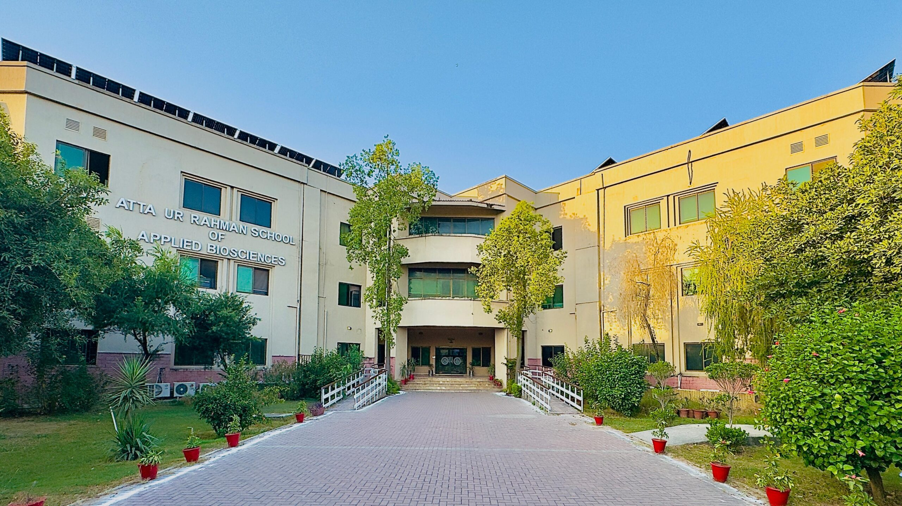

Atta-ur-Rahman School of Applied Biosciences – ASAB
About ASAB
The Atta-ur-Rahman School of Applied Biosciences (ASAB) is one of the
premier schools at the National University of Sciences and Technology
(NUST), dedicated to excellence in biosciences education and research.
ASAB focuses on developing highly skilled professionals in the fields
of biotechnology, microbiology, bioinformatics, and related
disciplines. Students at ASAB receive comprehensive training that
combines theoretical knowledge with practical laboratory experience,
preparing them for careers in research, industry, and academia. The
department is committed to advancing scientific knowledge through
innovative research and fostering a culture of academic excellence.
With state-of-the-art facilities and experienced faculty members, ASAB
continues to be at the forefront of biosciences education in Pakistan.

Academic Programs
Undergraduate Programs
BS Biotechnology
BS Biosciences
BS Microbiology
BS Bioinformatics
Postgraduate Programs
MS Biotechnology
MS Microbiology
MS Bioinformatics
PhD in Biological Sciences
Program Details
Program Name
Level
Duration
BS Biotechnology
Undergraduate
4 Years
BS Biosciences
Undergraduate
4 Years
BS Microbiology
Undergraduate
4 Years
MS Biotechnology
Postgraduate
2 Years
MS Bioinformatics
Postgraduate
2 Years
PhD Biological Sciences
Doctorate
3-5 Years
All programs are HEC recognized and internationally accredited
Research at ASAB
ASAB is renowned for its cutting-edge research in various fields of
biological sciences. The department conducts research in areas such as
molecular biology, genetic engineering, drug discovery, microbial
biotechnology, and computational biology. Our research contributes to
solving real-world problems in healthcare, agriculture, and
environmental sustainability. With well-equipped laboratories and
collaborative partnerships with international institutions, ASAB
researchers publish in high-impact journals and participate in
significant scientific projects.
Research Laboratories
Molecular Biology Laboratory
Equipped with advanced equipment for DNA/RNA analysis, gene cloning,
and protein expression studies. This lab supports research in
genetic engineering and molecular diagnostics.
Microbiology and Immunology Lab
Focuses on studying microorganisms, their interactions with hosts,
and development of vaccines. The lab is equipped with biosafety
cabinets, incubators, and microscopy facilities.
Bioinformatics and Computational Biology Lab
Features high-performance computing systems for genomic data
analysis, protein structure prediction, and drug design. Students
learn to use sophisticated bioinformatics tools and databases.
Plant Biotechnology Laboratory
Dedicated to tissue culture, genetic modification of plants, and
development of disease-resistant crops. This lab contributes to
agricultural research and food security.
Student Life at ASAB
Life at ASAB extends beyond academics. Students actively participate
in various activities that enhance their personal and professional
development:
ASAB Society: The departmental society organizes
academic seminars, workshops, and scientific competitions to promote
learning and innovation among students.
Research Symposiums: Annual research events where
students present their projects and interact with industry
professionals and researchers.
Skill Development Workshops: Regular workshops on
laboratory techniques, research methodology, scientific writing, and
career development.
Final Year Projects: Students undertake
comprehensive research projects under faculty supervision, often
collaborating with industry partners and research institutions.
Industrial Visits: Organized trips to
pharmaceutical companies, research centers, and biotechnology firms
to provide practical industry exposure.
Sports and Recreation: Students participate in
inter-departmental sports competitions and recreational activities
on NUST campus.
Admissions
Admission Requirements:
Admission Test: Candidates must appear in the NUST
Entry Test (NET) and achieve the required aggregate score for their
desired program.
Eligibility for Undergraduate: Minimum 60% marks in
Intermediate (FSc Pre-Medical/ICS) or equivalent with Biology,
Chemistry, and Physics/Mathematics.
Eligibility for Postgraduate: 16 years of education
with a relevant bachelor's degree and minimum CGPA requirements as
specified by the program.
Online Application: All applications must be
submitted online through the official NUST admissions portal during
the announced admission period.
For detailed information about admission dates, fee structure, and
application procedures, please visit the official NUST website:
Visit NUST Website